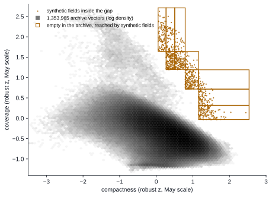
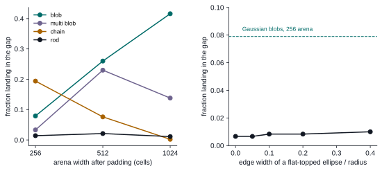
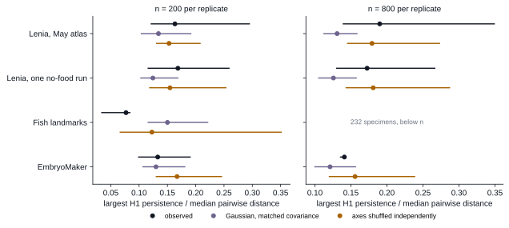
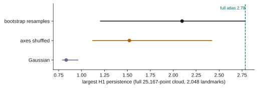
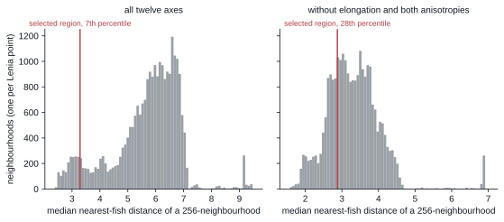

Where Flow Lenia bodies go in shape space, and where they do not
Twelve measurements of form place 25,167 Flow Lenia bodies in a cloud whose variance runs along about three effective directions, dominated by elongation, with a local structure closer to four or five. Most of the pairwise gaps in that cloud turn out to be consequences of the measurement itself or of undersampling, and they close when 1.35 million archived bodies are added.
One region survives both tests, made of bodies whose mass is concentrated near the centre while still filling their footprint, a combination that smooth synthetic fields reach easily and that no archived Flow Lenia body occupies. At equal sample size the persistent loops that earlier made Lenia look topologically richer than fish outlines or EmbryoMaker tissue fall within a marginal-shuffle null.
The shape of the occupied cloud
Every body in the atlas is reduced to the same twelve numbers from its terminal mass fingerprint, things like elongation, compactness, polarity, bilateral and radial symmetry, component count, coverage, boundary complexity and enclosure, and each axis is scaled by the robust centre and spread of the May 2026 atlas so that a unit means roughly one typical deviation. In that space the 25,167 Lenia bodies spread their variance over about 2.9 effective directions out of twelve (the participation ratio of the covariance spectrum), with the first principal direction loading almost entirely on elongation (−0.92) because a thin tail of long, streaked bodies stretches far beyond the rest. The same measure gives 2.1 for the 232 fish outlines and 1.5 for 826 EmbryoMaker snapshots, so the synthetic cloud is the broadest of the three, although it is still a low-dimensional object in a twelve-dimensional frame.
Among the 50 nearest neighbours of a typical Lenia body the participation ratio rises to 4.5, and the direction of greatest local spread is most often polarity (31% of bodies), followed by elongation (16%), enclosure (14%), bilateral symmetry (12%) and boundary complexity (10%). Locally the variance is spread more evenly over four or five directions, and the low global figure comes from the long elongated arm dominating the total, while nearby bodies in the core mostly differ in how lopsided, enclosed or mirror-symmetric they are.
We measured occupancy against a marginal-shuffle null, drawing each axis independently from the real values and asking how often such a recombined body lands farther from every real body than the data's own 95th-percentile nearest-neighbour distance. At 200 bodies per replicate, 31% of recombined Lenia bodies fall in empty space, close to the 33% for fish and well below the 55% for EmbryoMaker, whose axes are more tightly coupled. The figure depends on sample size (70% for Lenia at 800 bodies), which is why every comparison here is made at equal size. The Hopkins clustering statistic sits between 0.86 and 0.91 for all four clouds at both sizes, which says more about the emptiness of a twelve-dimensional bounding box than about any particular cloud, and we do not use it to separate them.
Sorting the empty regions
Raup's coiling space made the empty parts of a morphospace into objects of study, since the 405 ammonoids he placed in it crowd into a narrow ridge beside the whorl-overlap boundary and leave most of the conceivable shells unbuilt (Raup 1966; the ammonoid distribution from Raup 1967 is redrawn in McGhee 2006). McGhee later sorted the possible reasons for such emptiness into geometric constraints that follow from the construction of the space, functional constraints where a form could be built but would not work, developmental constraints where the generating process cannot build it, and phylogenetic or historical ones where the forms are possible and simply have not arisen yet (McGhee 2006; McGhee 2015). Flow Lenia lets us test those categories directly, because we can compute what the measurement can express, run the generating dynamics, and search for missing forms, while Foote's warning that the apparent fullness of a morphospace depends on the traits chosen (Foote 1997) and Gerber's point that distance and spacing only mean something in a space with suitable metric structure (Gerber 2017) apply to our twelve robust-scaled axes as much as to Raup's parameters.
We divided every pair of axes into a ten-by-ten grid of quantile bins, so that under independence each cell expects the same number of bodies, and found 195 cells that would hold between 155 and 255 bodies under independence yet contain none. Ninety of them lie in the elongation by anisotropy plane, where anisotropy is an exact function of elongation, so every cell off that curve is empty for every conceivable shape. To separate the remaining 195 − 90 = 105 cells we passed 17,991 synthetic mass fields from six families (single Gaussian blobs, clusters of blobs, ring arcs, tapered rods, thresholded noise disks and chains of blobs) through exactly the fingerprint pipeline that measures a Flow Lenia terminal state, and we checked each cell against all 1,353,965 distinct vectors in the expanded Lenia archive.
| Empty pairwise cells in the May atlas | Cells |
|---|---|
| Elongation by anisotropy, unreachable because one axis determines the other | 90 |
| Other cells no synthetic field reaches, and empty in the expanded archive | 33 |
| Cells no synthetic field reaches, occupied in the expanded archive | 16 |
| Cells synthetic fields reach, occupied in the expanded archive | 43 |
| Cells synthetic fields reach, empty in the expanded archive | 13 |
A cell counts as reached when at least five synthetic fields land inside it. The 16 cells that Lenia reaches and our synthetic families miss show that the six families are not exhaustive, so the 33 cells reached by neither remain unexplained and are not shown to be impossible.
Every cell with its ranges and countsForty-three of the 43 + 13 = 56 cells that synthetic fields reach turn out to be occupied once the expanded archive is included, so their absence from the May atlas was a matter of sampling. Thirteen remain empty among 1.35 million archived bodies, and ten of those thirteen lie in a single band of the compactness by coverage plane, with the other three (one coverage by boundary-complexity cell and the same coverage band seen through elongation and anisotropy) describing the same kind of body from other angles. Compactness here is one minus the ratio of mean to maximum radius, so it is high when mass gathers near the centre, and coverage is the fraction of the disk out to the maximum radius that the footprint fills. The archive shows a clear trade-off between the two, and the empty band is the region where both are high at once.

Grey hexagons show the log density of every distinct vector in the expanded archive, measured on the May atlas scale. Orange outlines mark the ten compactness by coverage cells that no archived body occupies and that synthetic fields reach; orange points are the synthetic fields inside them.
Synthetic reach by familyThe synthetic fields that reach the band are mostly chains of Gaussian blobs and single blobs, whose mass tapers smoothly from one or more peaks so that the quantised footprint picks up a faint, wide halo around a concentrated core. Two probes tested what puts a field there. Padding the same synthetic body into a larger arena before fingerprinting raises the in-band fraction for single blobs from 7.9% at 256 cells to 26% at 512 and 42% at 1,024, since a body that spans fewer fingerprint pixels is represented by a coarser, more peaked footprint, while chains move the other way and fall out of the band as they shrink. Flat-topped ellipses almost never reach it (0.7% to 1.0%), and softening their edge from a sharp step to a ramp spanning 40% of the radius leaves that fraction essentially unchanged, so a gentle rim on a plateau is not enough and the band belongs to bodies whose density keeps falling from the centre outward.

Left: 1,000 fields per family, each padded to three arena widths before the fixed 32 by 32 fingerprint. Right: 600 flat-topped ellipses per edge width in a 256-cell arena, compared with Gaussian blobs in the same arena.
Probe outputsThis is the first region of the Flow Lenia morphospace that we can call a candidate constraint on the generating dynamics, since the measurement reaches it, a smooth mass field reaches it, and more than a million archived bodies from bulk sweeps, parameter loops, MAP-Elites archives and canonical replays do not. Flow Lenia bodies instead look like plateaus with steep fronts, which is what the growth function would produce if it saturates local density, although that mechanism is our conjecture and nothing here tests it. McGhee's categories also leave a historical reading open, because none of the searches that built the archive aimed at compactness or coverage, and an earlier random sweep for compact gliders in orbium-like classic Lenia returned no qualifying body at all, since the bodies it produced were stable but fell short of both the displacement and the velocity thresholds, which is a reminder that a targeted phenotype can be absent from a large random archive without being unbuildable.
Two caveats limit how far the archive can carry the claim. The arena probe shows that body-to-frame scale moves bodies into and out of the band, and the archive does not record grid size, so a Lenia body that happened to be small in a large arena would be measured with the coarse footprint that most easily reaches the band, and this cannot be corrected after the fact. The archive was also built before the Flow Lenia engine correction of 15 September 2026, so it describes the dynamics of a superseded simulator, and whether the band stays empty under the corrected engine is part of what the search below has to establish.
A registered search at the gap
Telling a constraint of the dynamics apart from a region nobody has searched means aiming a search at the band and seeing whether a coherent body can be made to sit there, so we registered the target and the criteria below before any run.
- Target: the thirteen cells that synthetic fields reach and that contain none of the 1,353,965 archived vectors.
- Missing evidence: whether any coherent Flow Lenia body under the corrected engine can hold a centrally peaked, smoothly decaying footprint. No existing run targeted these descriptors and no archived vector lies in the region, so re-reading existing runs cannot answer the question.
- Success: at least one body whose time-median twelve-axis vector over the established post-burn-in window lies in a target cell, that passes the corrected-engine qualification (80% of mass in the largest connected component, with the persistence and localisation criteria of the September pilot), and that lands in a target cell again when re-evaluated independently from its saved configuration.
- Failure: no qualifying body in any target cell within the stated evaluation budget. We would then report the closest qualifying approach and the archive coverage reached, and treat the band as a candidate constraint of the dynamics, which falls short of an established impossibility.
The run plan fixes the budget at 80 generations of 256 bodies, or 80 × 256 = 20,480 evaluations of 900 steps each, with the fitness gates, parameter ranges, mutation widths and warm starts of the May individual-persistence archive left unchanged and only the two archive descriptors swapped for compactness (18 bins from 0.35 to 0.80) and coverage (20 bins from 0 to 1). The search proposes candidates from the final mass map of each evaluation, and only a 3,600-step replay through the full September pipeline decides whether a candidate counts. Before the search, its compactness and coverage descriptors were checked against the Python extractor on 3,533 fingerprints, and they agree everywhere except at exactly equal covariance eigenvalues, where the principal axis depends on how rounding ties are broken, a case no real or synthetic fingerprint comes within a relative eigengap of 0.0019 of.
The search has not been run. Its warm starts come from the May 8 archive, and on 10 October 2026 the current engine failed to reproduce that archive, with a median relative fitness difference of 0.41 against a tolerance of 0.001, 6 of 16 fitness gates changing outcome, and only 33 of 256 elites keeping their exact scores, while the May 8 engine still reproduces the archive bit for bit. The cause is not yet confirmed. The search therefore waits on a choice between the May 8 engine, which matches the archive but predates the September correction, and the current engine with an amended registration that re-qualifies the warm starts first, and this section will report the result once the search has run under the chosen engine.
Persistent loops at equal sample size
Persistent homology finds loops in a point cloud by growing a ball around every point and recording how long each enclosed hole survives, and Chia and colleagues (2026) have used exactly this construction to find a gap in the bill and body morphospace of passeroid birds that stays empty through their diversification. The earlier version of our comparison gave the broad Lenia sample a strongest loop of 2.78, a single-family Lenia control 0.80, fish 0.64 and EmbryoMaker 0.29, but those figures came from clouds of 25,167, 8,192, 232 and 859 points, and persistence summaries depend on sample size (Chazal et al. 2015) as well as on the scale of each cloud. We therefore drew 100 replicates of 200 and of 800 bodies from each cloud, divided the largest loop persistence by the replicate's median pairwise distance, and compared each cloud with a Gaussian of matched covariance and with a marginal shuffle that keeps every axis distribution and breaks their joint structure.

Points are medians and bars span the 5th to 95th percentiles over 100 replicates. Persistence is divided by the replicate's median pairwise distance so that clouds of different spread can be compared. The fish set has only 232 specimens and appears only at 200.
All replicates, with the two anisotropy axes removed as wellAt equal size both Lenia clouds still carry longer loops than a Gaussian of the same covariance (0.19 against 0.13 at 800 bodies), and they sit on top of the marginal-shuffle null (0.18), so the heavy-tailed distributions of the individual axes already account for how loop-rich Lenia looks, with no sign of bodies arranged jointly around a hole. EmbryoMaker falls between the Gaussian and the shuffle, and the fish outlines have shorter loops (0.08 at 200) than either null, which fits a small set of specimens packed around a few body plans. Removing anisotropy, or anisotropy together with the largest-component anisotropy, leaves every one of these medians within 0.01, so the redundant elongation axes do not create the loops.
The individual loops in the full cloud are also less stable than a single persistence value suggests. Reseeding the landmark selection returns the two strongest loops unchanged every time, but each is spanned by only three bodies in the sparse tail of many-component records, where a loop can form between a handful of distant points, which is the behaviour Chia and colleagues found for high-persistence gaps in their Brownian null datasets. Bootstrap resamples of the whole cloud recover the strongest loop in 46% of replicates and the second in 92%, their largest persistence spans 1.21 to 2.78 with a median of 2.10, and none of twelve Gaussian or twelve marginal-shuffle nulls reaches the full-cloud 2.78 (the shuffle maximum is 2.64). The expanded archive then fills the strongest loop with a verified filling certificate at scale 13.19, before its May death at 14.59, and the expanded cloud's own strongest loop reaches only 1.38. None of these loops offers a gap that a search could target, which is why the registered search aims at the compactness by coverage band instead.

Bars span the 5th to 95th percentiles and points mark medians: 24 bootstrap resamples, 12 marginal shuffles and 12 Gaussian clouds, each with 25,167 points and 2,048 landmarks.
Loop identities, vertices and recovery ratesWhat shape predicts about behaviour
Three earlier results concern what the shape coordinates leave out. In a separate analysis of 8,174 creatures, the twelve measurements explained most of the variation along an activity axis (R² = 0.725) but almost none along a locomotion axis (R² = 0.038), so knowing a body's shape says a good deal about how much it churns and very little about whether it travels (anatomical compiler).
A May experiment, which this page earlier described as holonomy, walked closed rectangles in rule-parameter space and measured the residue left in the evolved state against matched out-and-back retrace controls, so it measured state transport around parameter loops and carries no information about the set of rules that grow one shape. Among 4,802 such loops, 109 left a residue larger than the retrace controls at every tested scale and under both closure measures, a joint count that would arise about one time in eleven under permutation (p ≈ 0.094), while the state-only and ratio-only tails are rarer, about one in 125 and one in 5,000. Dense reruns kept one joint survivor among the ten candidates rechecked, and on flow-map-elite-53, one of the rechecked bodies, the retrace control's own residual (0.001772) exceeded the loop's (0.001577), so the experiment does not establish transport beyond what the controls produce.
The obstacle assay asks how coherent bodies respond when shape alone cannot say. Of 626 exact long replays, 184 stayed coherent and nine also travelled at least half a body diameter, five of which qualified for paired encounters, and across fifteen contacts median forward progress was 18% of the matched sham with a median heading change of 26°, while every branch conserved its matter (obstacle response). The two bodies with the highest temporal-individuality scores kept about 30% of their sham progress and turned 12 to 13°, which is a hypothesis about five organisms that a lineage-held-out assay would need to confirm.
How the synthetic morphospace compares
Biological morphospaces range from Raup's mostly empty coiling space to the skeleton space of Thomas and Reif, whose designs have been used almost exhaustively by living and extinct animals (Thomas and Reif 1993), and Foote showed that where a space falls on that range depends heavily on how its features are decomposed. With twelve derived measurements our Lenia space sits toward the full end once the measurement identity and sampling are accounted for, since only thirteen of the 56 pairwise cells that our synthetic fields reach stay empty across 1.35 million bodies, although twelve axes of a two-dimensional footprint are a coarse decomposition and a finer one would almost certainly open more room.
On clustering against continuity, Foote contrasted the discrete clusters of Ordovician forms with Globorotalia, whose named taxa spread continuously through morphospace without matching clusters. The Lenia cloud is closer to the continuous case, with a dense core, one long elongated arm and a sparse tail of fragmented records, and its loop structure at equal size is what heavy-tailed independent axes would already produce. EmbryoMaker is the closest analogue we have, since it is also a generative model whose parameters we control. Exhaustive simulations of early animal development in it found that most morphologies arise from combining a few transformations (elongation, invagination, evagination, condensation and anisotropic growth), that many different cell behaviours converge on the same transformation, and that elongation appears only when planar cell contraction is active (Cano-Fernández et al. 2025), while random regulatory networks in the same model make complex morphologies rare, finely tuned and clustered near each other in parameter space (Hagolani et al. 2021). Elongation is also the dominant global direction of the Lenia cloud, and polarity and enclosure dominate locally, which invites a direct comparison between Lenia's preferred directions and EmbryoMaker's small set of transformations on shared footprints.
Preferred directions are where the analogy needs most care, because developmental bias in real organisms is often weaker than the architecture suggests; Beldade and colleagues found great potential for independent change between developmentally coupled butterfly eyespots (Beldade et al. 2002). A direction that dominates a cloud of outcomes can reflect what the sampling process favoured as much as what the dynamics permit, which is the same distinction the gap search is designed to draw.
Interpretation
Levin's framing treats morphogenesis as navigation through an anatomical morphospace by collectives that pursue target forms (Levin 2022), and a synthetic system in which we control the rules, the measurement and the search gives that picture an empty map to work against. The compactness by coverage band is the first place in Flow Lenia where we can ask whether the collective cannot get somewhere, which would be a constraint in McGhee's developmental sense, or simply has not been sent there. If the registered search places a coherent body in the band, the empty region was historical and the archive records where our searches have been; if it fails within the budget, the plateau-and-front character of Flow Lenia bodies becomes a concrete candidate for what the dynamics impose on form, while the measurements above stand whichever of these readings the search supports.
A prediction for bacterial colonies
Bacterial colonies and biofilms are grown bodies that we can image as two-dimensional footprints, which makes them the natural next substrate for the same twelve measurements. The shared descriptors are compactness, coverage, boundary complexity, radial and bilateral symmetry, enclosure and component count, measured through the same 32 by 32 fingerprint with each colony scaled to occupy a matched fraction of the frame, since the arena probe showed that body-to-frame scale moves bodies into and out of the band. We predict that colonies with a spreading front and a dense interior behave like Flow Lenia plateaus and avoid the high-compactness, high-coverage band, with fewer than 1% of footprints landing in its thirteen cells (the rate for flat-topped ellipses), and that the few that enter it are colonies with a raised centre and a thin spreading margin.
The prediction fails if, at matched scale, 7.9% or more of the colony footprints land in the band (the rate for Gaussian blobs in a 256-cell arena), or if the colonies that do enter it are flat-topped, and a rate between 1% and 7.9% counts as inconclusive. The dataset, the scaling rule and the colony segmentation will be fixed in the protocol before any colony is measured.
What the fish-near comparison taught us about selection
An earlier version of this page described a patch of 256 Lenia bodies, selected from loop geometry without fish data, whose median distance to fish outlines was 3.30 against 5.90 for the whole cloud, and it put the chance of so large a shift at about one in a thousand. Although no fish data entered the choice, the patch was still the best of about 24 candidates drawn from the forty most persistent loops at four neighbourhood sizes and ranked by their transport p-value, and 22 of those 24 candidates showed the same tilt toward fish, so the tilt is common to the neighbourhoods that procedure could have picked. The comparison null then drew whole-cloud random subsets and compared means while the page reported medians. Against the fair null of every 256-body neighbourhood in the cloud, about one in fourteen (7.2%) has a fish median at or below 3.30 and about one in seven (14.5%) has every member reversed in its fish-versus-tissue ordering, and neighbourhoods around the strongest loops are no more fish-near than random ones.

One neighbourhood per Lenia body, each its 256 nearest bodies. The red line marks the selected region.
Reconstruction of the region and every nullMuch of the remaining closeness comes from the elongation axes. The region's mean elongation is 9.5 robust units against a Lenia median of 0.04 and a fish mean of 7.0, and when elongation and both anisotropy axes are removed the region falls to the 28th percentile of neighbourhoods, while 161 of its 256 bodies have the same paddlefish specimen as their nearest outline. A wider comparison on bodies from the pre-correction engine had also found most persistent historical bodies nearer to a fish outline than to EmbryoMaker tissue, and the corrected engine reverses it, since in a stratified pilot of 24 paired configurations 16 moved from fish-nearer to tissue-nearer and none moved the other way, and 14 of the 15 bodies that currently qualify are tissue-nearer, which ties the earlier resemblance to diagonal anisotropy that the engine fault introduced.
The general lesson is that a region chosen by any criterion, even one blind to the comparison, has to be compared with the other regions the same procedure could have chosen, using the same summary statistic in the null as in the report, with the direction of every one-sided test stated before the result.
Corrections to the earlier fish-near claim
- The 256-body region was the top-ranked of about 24 candidates (the forty most persistent loops at k = 256, 512, 1,024 and 2,048, ranked by transport p), and 22 of the 24 showed the same fish tilt.
- The reported one in a thousand came from whole-cloud random subsets compared by the mean, while the page reported the median. Against all 256-body neighbourhoods, 7.2% have a fish median at or below 3.30 and 14.5% have every member reversed.
- The bridge test was one-sided in the wrong direction.
- The transport p of about one in 2,000 was the permutation floor, maximised over about 24 candidates.
- Neighbourhoods around the strongest loops are no more fish-near than random neighbourhoods (5% of the top 40 against 7.2% of all).
- Without elongation and both anisotropy axes the region sits at the 28th percentile, and 161 of its 256 bodies map to one paddlefish specimen.
- The general fish-nearness of persistent bodies came from the pre-correction engine and reverses under the corrected engine.
Methods and receipts
All analyses use the May 2026 atlas of 25,167 Lenia observations, the 232 dryad fish outlines and 826 EmbryoMaker snapshots of the September expansion, the 1,353,965 distinct Lenia vectors of the expanded archive, and the robust centre and scale of the May atlas profile. The atlas and the expanded archive were generated before the engine correction of 15 September 2026, and the obstacle assay ran on the engine of 2 September 2026. Synthetic fields go through centre-of-mass alignment, box resampling to 32 by 32, normalisation by total mass and 8-bit quantisation before the same point-cloud shape features, so they are measured exactly as a terminal Flow Lenia state is. Loops use Vietoris–Rips persistence with 2,048 greedy landmarks for the full cloud and exact persistence for equal-size replicates.
Occupancy, participation ratios and local directions · Empty cells · Synthetic reach · Arena and edge probes · Equal-size topology · Loop stability · Fish-near audit · Registered gap search